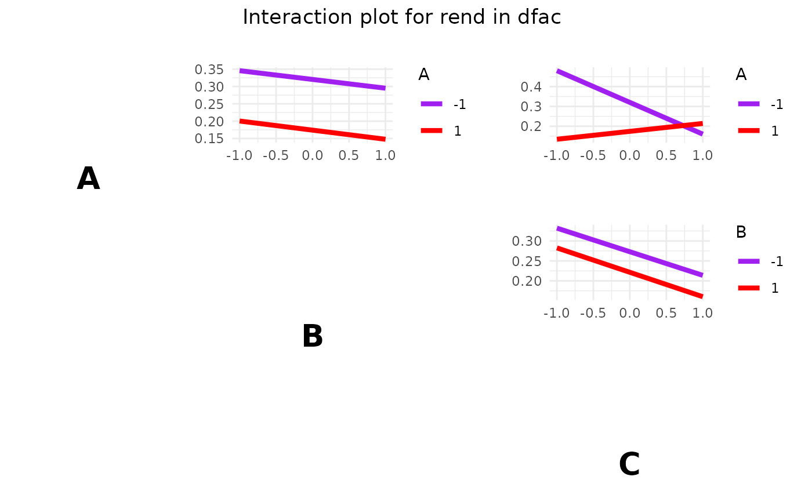
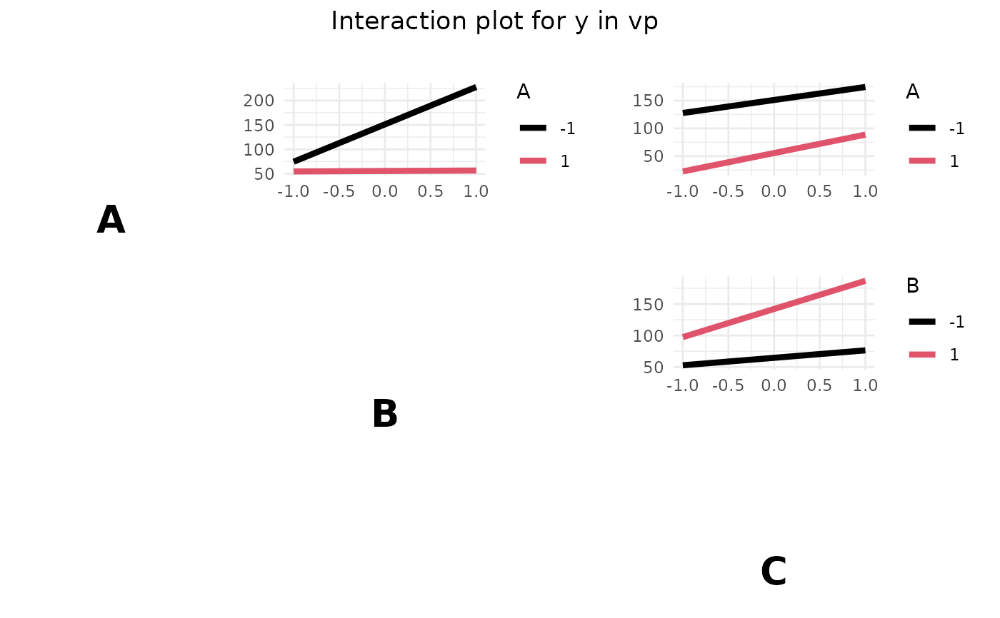

Creates an interaction plot for the factors in a factorial design to visualize the interaction effects between them.
Arguments
- dfac
An object of class
facDesign.c, representing a factorial design.- response
Response variable. If the response data frame of fdo consists of more then one responses, this variable can be used to choose just one column of the response data frame.
responseNeeds to be an object of class character with length of `1`. It needs to be the same character as the name of the response in the response data frame that should be plotted.- fun
Function to use for the calculation of the interactions (e.g.,
mean,median). Default ismean.- main
Character string: title of the plot.
- col
Vector of colors for the plot. Single colors can be given as character strings or numeric values. Default is
1:2.
Details
interactionPlot() displays interactions for an object of class facDesign (i.e. 2^k full or 2^k-p fractional factorial design).
Parts of the original interactionPlot were integrated.
Examples
# Example 1
# Create the facDesign object
dfac <- facDesign(k = 3, centerCube = 4)
dfac$names(c('Factor 1', 'Factor 2', 'Factor 3'))
# Assign performance to the factorial design
rend <- c(simProc(120,140,1), simProc(80,140,1), simProc(120,140,2),
simProc(120,120,1), simProc(90,130,1.5), simProc(90,130,1.5),
simProc(80,120,2), simProc(90,130,1.5), simProc(90,130,1.5),
simProc(120,120,2), simProc(80,140,2), simProc(80,120,1))
dfac$.response(rend)
# Create an interaction plot
interactionPlot(dfac, fun = mean, col = c("purple", "red"))

# Example 2
vp <- fracDesign(k=3, replicates = 2)
y <- 4*vp$get(j=1) -7*vp$get(j=2) + 2*vp$get(j=2)*vp$get(j=1) +
0.2*vp$get(j=3) + rnorm(16)
vp$.response(y)
interactionPlot(vp)
